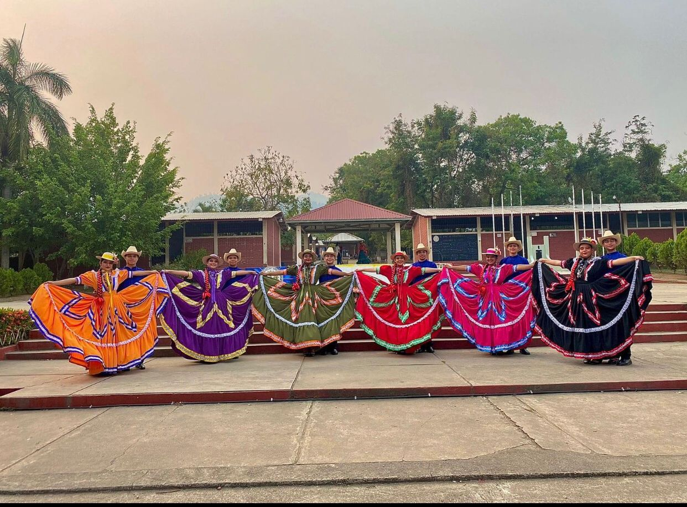

IPFM
El Instituto de 1974 a 1982 funciono solamente con una jornada y fue en el año 1983 que dio inio a la jornada nocturna dando asila oportunidad a varios jóvenes que por diversas situaciones no habían podido continuar sus estudios en jornada matutina. En el año 1985 se realizaron gestiones para que se abriera carrera de educación comercial y esta inicio su funcionamiento en el año 1986 solamente en la jornada nocturna y en forma privada donde los estudiantes y padres de familia costeaban el pago de profesores que trabajaban opara esta área y fue hasta el año 1988que se consiguió que se incluyera en el presupuesto oficial de la Institución a partir de esa fecha los padres de familia ya no pagan ninguna cuota por mensualidad obligatoria.
En el año de 1995 por Decreto Ejecutivo N° 174-94 el Congreso Nacional de la Republica convierte a nuestra Institución en Instituto Polivalente pero por razones de presupuesto; poca colaboración del estado hondureño no se iniciaron operaciones como tal sino hasta en el año 1999 se iniciaron las gestiones apoyando fuertemente el consejo general de profesores y de este modo se inicio como Polivalente hasta el año 2000. Actualmente la Institucion cuenta con las instalaciones modernas que fueron construidas en el año 1991 haciendo un total de 6 modulos y en el año 2000 que se construyo un nuevo modulo de aula total de módulos siete. Distribuidos asi: un modulo administrativo; dos modulos para talleres; cuatro para aulas de clases. En el año 2003 con efuersos de estudiantes, profesores y padres de familia se construyo el taller de estructuras metálicas. Y los Bachilleres en Control de Calidad y Produccion en suTrabajo Educativo Social construyeron un edificio donde se instalara la sala de Mecanografía – Laboratorio Contable. El instituto cuenta con tres Laboratorios de Computacion; una plasa civica; una cancha de usos multiples y amplias áreas verdes.
